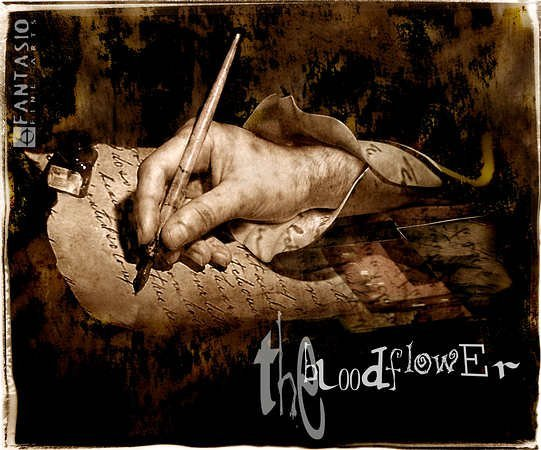
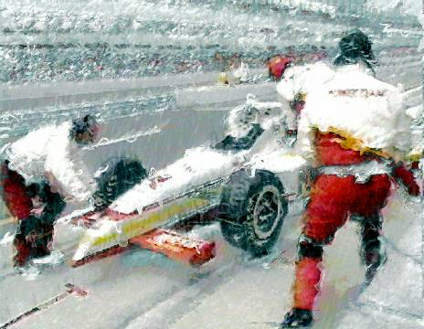
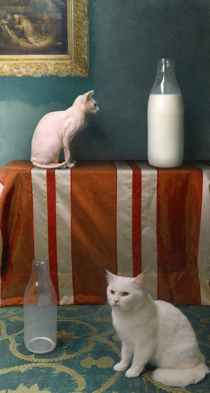
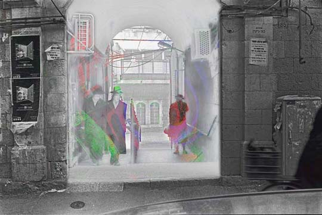
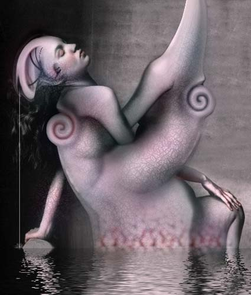
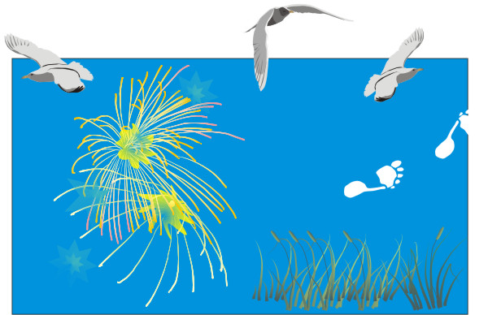
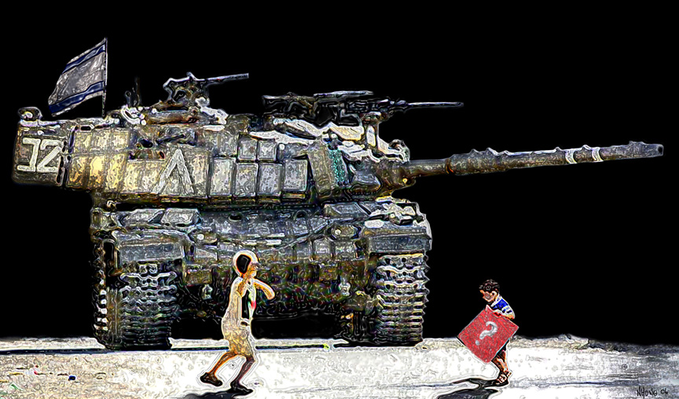

IMAGES OF THE DAY 98
03/01/2024 - 03/10/2024

03/01/2024
Photo-Based
Fantasio
The Blood Flower
by Oliver Wetter
Click image to access artist's full exhibit

03/02/2024
Photo-Based
EYEJAM
Racing V
by David Works
Click image to access artist's full exhibit

03/03/2024
Photo-Based
Photographic Art
#2009_03
by Bogdan Zwir
Click image to access artist's full exhibit
03/04/2024
Photo-Based
Homo Ludens
031 Homo Ludens 13 BBB
by Eva Gyorffy
Click image to access artist's full exhibit

03/05/2024
Photo-Based
Micronirico
Coffee Break
by Claudio Allia
Click image to access artist's full exhibit

03/06/2024
Photo-Based
One Pixel Exploration
Pixel1
by Nathan Brusovani
Click image to access artist's full exhibit
03/07/2024
Photo-Based
Art-Emotion
Dance and Dream
by Anne-Marie Grenacher
Click image to access artist's full exhibit


03/08/2024
Photo-Based
Surrealism: Erotic
My Sister Strains for the Sky
by Francesco D'Isa
Click image to access artist's full exhibit

03/09/2024
Photo-Based
Photography, Photo-Editing and Digital Portraits
Shoreline
by Don Ernesto
Click image to access artist's full exhibit

03/10/2024
Photo-Based
Post-Post-Modernist Digital Art
Goliath
by Neil Howe
Click image to access artist's full exhibit